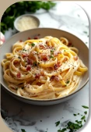
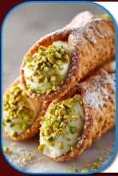
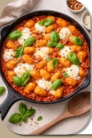
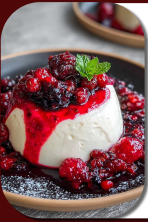
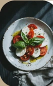

Monte seu prato
Personalize um prato já existente no cardápio. Molhos e ingredientes indicados abaixo viram apenas observações, sem alterar o preço oficial.
Cardápio especial
Confira os pratos principais, sobremesas e bebidas existentes.
Ver pratosVer sobremesasVer bebidasHistórico e comprovantes
Use somente pedidos de demonstração disponíveis neste navegador. A impressão em PDF é feita pela opção "Salvar como PDF" do seu navegador.
Escolher pedido
Repetir um pedido adiciona os produtos ao carrinho, mas não envia nada automaticamente.
Resumo selecionado
Compare os pratos
Comparamos preços e descrições do site. Informações de alérgenos não estão verificadas: não utilize esta demonstração para decisões de segurança alimentar.
Resultado
Reservas, agendamentos e eventos
Solicitações ilustrativas salvas somente neste navegador. Nenhuma reserva ou entrega será realizada.
Solicitações salvas
Painel de operações — demonstração
Teste o funcionamento visual do caixa, cozinha, estoque e acompanhamento. Esta área não é privada, não registra vendas reais e não altera o SQL Server.
Caixa digital de teste (PDV)
Somente teste local; não envia pedidos à cozinha.
Cozinha e cronômetro
Estoque ilustrativo
Indicadores e entregas
Estado do restaurante
Indicador manual local — não bloqueia compras reais.
Atividades e notificações
Central de ajuda
Respostas automáticas baseadas nas informações deste projeto, não é atendimento humano.
Resposta
Personalização e ferramentas
Aparência
A tradução é parcial; o restante do site permanece em português.
Backup local e aplicativo
O backup exporta somente dados demonstrativos deste navegador. Não é backup do SQL Server.
Compartilhar o cardápio
Abrir cardápioRecursos que exigem servidor
Contas reais, permissões de funcionários, cupons validados, pagamentos reais, atualização de pedidos e prevenção definitiva de duplicações devem funcionar na API protegida, não no GitHub Pages.
Ver painel demonstrativoGaleria de sabores
Fotografias do cardápio já existentes no projeto.







